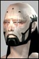

Sigyn
Soleet
 Registered: Dec 2001
Posts: 52 | Patch 14.2 And NCU deck... Ok, I reread the 14.2 notes, but I don't think I saw there anything about NCU deck stuff. I am especially wondering about belts. If you buff CompLit a lot, equip a 6-slot belt, and fill all 6 slots with stuff - what will happen when buffs go away?
Will the belt drop to being a 5 slotter or less?
If so, Will item in slot 6 unequip? or become inactive? |
WGMelchior
Supa Leet
 Registered: Nov 2001
Posts: 547 | Belts will NOT be affected. I think Cosmik said something about it in the threads on the 'Funcom talks about' forum. |
Leumas
Phear Leet
 Registered: Dec 2001
Posts: 189 | How about implant? nt |
Vala
Leet
 Registered: Nov 2001
Posts: 6 | the same, it is too difficult to code it, without major problems |
Merkaba715
Phear Leet
 Registered: Nov 2001
Posts: 201 | implants and belts wont be affected, but what were you talking about when you said 'when the buff's go away?' |
Sigyn
Soleet
Registered: Dec 2001
Posts: 52 | By 'buffs go away' I mean 2 things:
1. When the +50 CompLit buff times out.
2. When you remove the CompLit implant in favor of something more useful. |
Scorus
Supa LeetRegistered: Jul 2001
Posts: 886 | quote:
Originally posted by Sigyn
By 'buffs go away' I mean 2 things:
1. When the +50 CompLit buff times out.
2. When you remove the CompLit implant in favor of something more useful.
Nothing will happen, the NCU will still operate at full force.
Scorus Last edited by Scorus on March 18th, 2002 at 22:49 |
Docgalaad
Phear Leet
 Registered: Dec 2001
Posts: 72 |  Technically TechnicallyTechnically, there is no problem to install NCU.
You buff Comp Litt to have a better abilitie to install NCU in a Belt.
Once you have installed NCU in the Belt, there are no difficulties to use them. So, NCU are not limitated by the Comp Litt Skill Debuff.
Nevertheless, the comp litt could be considered to wear the belt, not NCUs. Belt 1X, 2X, 3X, 4X, 5X, 6X have different need in comp litt to wear them. But force players to use a lesser version when the comp litt debuff put their Belt in red is impossible.
1. A belt drop cause your NCUs to drop. In a fight, you could have not suffisant space in your inventory to recover all your NCUs (Overflow inventory dont work well, open 2 bags at the same time and report me what will happen to you, lol).
2. You will be not very happy to have to install again 6 NCUs in a row, in a mission area, after a debuff. To have a sense, a malus cant happen in the middle of a fight.
3. if you have not the requirement to wear your belt 5X anymore (for instance, cause a debuff), your 5th NCU will be marked as red and be ignored in your total NCU number. Like if you wear a 4X Belt. It's not possible, because you dont know what is a decent requirement for a belt 4X. Why not 3X or 2X ? It's not possible, because you will be buffed for more NCU than the total.
In fact, to want to install malus system on comp litt debuff will cause many bugs, troubles and big nonsenses in the game. The game is very well like that. As Gaute Godager said himself, NCUs are an essential part of the social gameplay. |
Merkaba715
Phear Leet
Registered: Nov 2001
Posts: 201 | quote:
Originally posted by Sigyn
By 'buffs go away' I mean 2 things:
1. When the +50 CompLit buff times out.
2. When you remove the CompLit implant in favor of something more useful.
are you a trader? I didnt think anyone else had a +50 for comp lit  |
AnotherFixer
Supa Leet
 Registered: Nov 2001
Posts: 299 | Most people use implants to install high-end NCU, then remove the implants to use normal ones.
That's what COULD have screwed everyone up on NCUs with the OE patch. But, as it has been said several times, we don't have to worry about it since NCU will not be effected by this patch.
What I DO want to know about are scopes. Scopes are classified as "weapons" I believe. As such, will they be reduced in effectiveness with the OE patch if reqs are not always kept up? |


 Last Thread Next Thread
Last Thread Next Thread 
 March 16th, 2002 23:24
March 16th, 2002 23:24